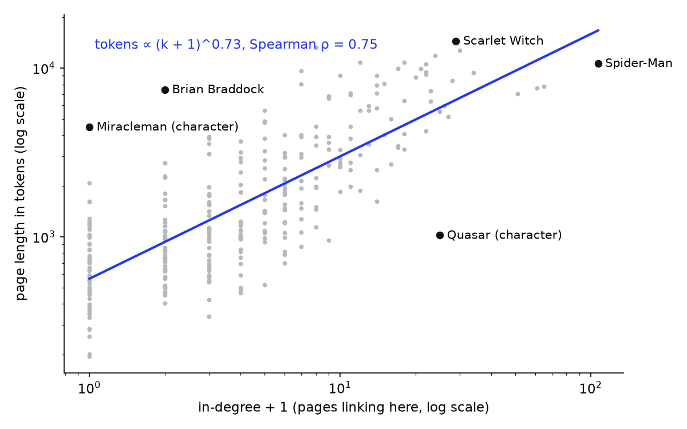
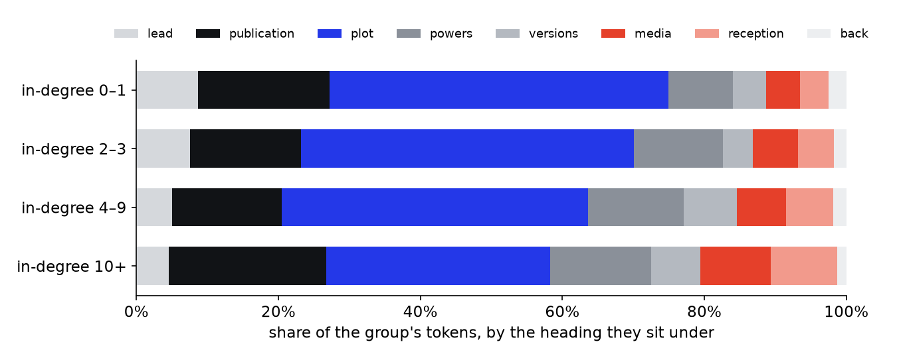
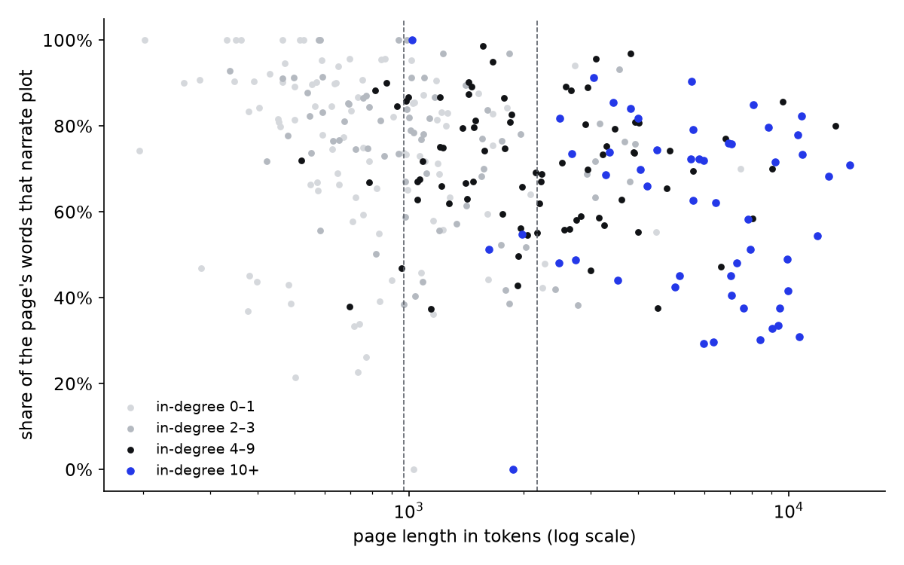

§2course
Relative frequency
\(f_w = n_w / N\)
a count divided by the total, so groups of different size compare
A longer page, with less of it spent on plot. But a long page about an obscure character reads just the same: the shift goes with length, not fame.
Since week 1 we have known who is famous inside the network: the characters other articles link to. This week every node is also a document, so we can ask what that fame is worth in text. Pages run from 195 tokens (Helix) to 14,469 (Scarlet Witch); the median is 1,261.
Fame buys words, but less than one for one. Ten times the in-links means about five times the page, and the pages nobody links to (58 of them) are short: median 652 tokens, against 5,971 for in-degree 10 or more.

Hover a dot for the character.
Character pages share a template: Publication history (the comic as a real-world object), Fictional character biography (the plot), then powers, other versions, other media and reception. In the plain text a heading is a line after two blank lines, and a sub-heading (1970s, Excalibur) belongs to the last template heading above it.
By the headings, fame changes the page a lot: the least-linked pages are 48% plot, the most-linked 32%, with publication history, other media and reception taking the space.
But a heading is an editor's filing decision, not a measurement of what a paragraph says. 22 pages have none of the plot headings we map (Deadpool, Cable and Venom among them): some file plot under a variant we do not map (Character biography on Spider-Man Noir), some tell it under powers, other versions or the lead. So we measure the paragraphs themselves.

So we let the words decide. The 239 pages that have both template headings give 3,786 labelled paragraphs (20+ words): plot or real-world. A Bag of Words over those paragraphs trains a naive Bayes classifier, which scores a paragraph by adding up each word's log-ratio between the two kinds of text.
We kept the stopwords on purpose. Plot is written in the present tense (escapes, tells), publishing history in the past with dates and creators, and the function words carry part of that.
| validation | result | against |
|---|---|---|
| 5 folds, held out by page | 94% right (91%–96%) | 69% for always guessing plot |
| 24 paragraphs from the 22 pages without a plot heading, labelled by reading them (a first pass by Claude Code, still to be re-read by us) | 21 of 24 agree | all three misses are real-world text it calls plot |
| its strongest words | |
|---|---|
| real-world | august, february, ditko, december, stan, sept, wolfman, romita, 1987, penciller, penciler, reprinted, premiere, kirby, september |
| plot | ship, escapes, freed, asgard, balder, facility, horde, secretly, attacking, teddy, activities, tells, breaks, attack, julian |
The held-out pages still follow the template; the pages we most need to measure do not. So the read sample is the check that matters. Its three misses are two adaptation listings (a video game, a TV episode) that retell a scrap of story, and a note on the deity behind Enigma's costume: off the template, the classifier slightly overcounts plot.
Measured paragraph by paragraph, famous pages still narrate less: median plot share 78% for in-degree 0–1, 66% for 10+. Smaller than the headings claimed, but there.
Famous pages are long, though, and a long page has room for reception, adaptations and a publication history. Plot share falls with length whoever the character is (ρ = −0.32). Hold length fixed and in-degree tells you almost nothing more: the correlation drops to 0.04. Among long pages the famous ones sit at 68%, against 70% for in-degree 4–9, a gap far smaller than the one between short and long pages.
| length (tokens) | in-degree 0–1 | 2–3 | 4–9 | 10+ |
|---|---|---|---|---|
| short · 195–969 | 82% (66) | 83% (28) | 72% (7) | – |
| middle · 971–2,179 | 73% (28) | 77% (33) | 73% (36) | 53% (4) |
| long · 2,204–14,469 | 55% (5) | 70% (10) | 70% (37) | 68% (49) |
Median plot share, number of pages in brackets. Read down a column: length moves it. Read along a row: fame barely does, and the cells with the biggest differences hold four or five pages.

The pages furthest from the line in section 01, read in full. The long ones are mostly characters whose fame was made outside this network: British comics, or a long run through other heroes' titles. In-degree only counts links from the 302 other pages in the category, so it cannot see that. The short ones are mentioned more than they are written about.
| page | in-degree · tokens | what the page is |
|---|---|---|
| Brian Braddock | 1 · 7,446 (×8 of the line) | Captain Britain: a British publishing history (Captain Britain Weekly, Excalibur, MI: 13), fame made outside this network |
| Miracleman (character) | 0 · 4,471 (×7.9 of the line) | Marvelman, a British character from 1954: four publishers and a 15-year legal fight over who owns him; almost none of it involves other Marvel heroes |
| Betsy Braddock | 7 · 13,289 (×5.2 of the line) | Psylocke: decades of X-Men plot, Captain Britain's twin, a 1989 redesign in a new body, and a reception section of fan polls |
| U.S. Agent | 6 · 9,653 (×4.2 of the line) | a replacement Captain America whose plot runs through nearly twenty storyline sections, from Force Works to the Thunderbolts; on screen since 2021 |
| Quasar (character) | 24 · 1,020 (×0.2 of the line) | one title held by several characters; the in-links point at the name, the stories live on the holders' own pages |
| Blue Bullet | 2 · 338 (×0.3 of the line) | an Invaders villain with two appearances (1976 and 1993): little to say, and the page says little |
| Ch'od | 4 · 520 (×0.3 of the line) | a Starjammers alien in the X-Men books since 1977: often mentioned, rarely the subject |
Choices: spaCy tokens without punctuation; in-degree as fame; the +1 in the log fit; fame groups 0–1, 2–3, 4–9, 10+; paragraphs of 20+ words; naive Bayes trained on the template pages' headings, stopwords kept. We cannot conclude that fame causes long pages (popularity outside the network could cause both), or that the classifier is exact on pages without the template: 21 of 24 is a small sample, and so far a first reading by Claude Code.
Every formula on this page. Course: as written in week 5. Adapted: a course idea in a new form, with what changed.
a count divided by the total, so groups of different size compare
a straight line on log-log axes, as for Zipf's law
fitted to page length against in-degree rather than frequency against rank; the +1 keeps the unlinked pages
relative frequency in plot over real-world paragraphs
the course's relative frequency with one added count; summing it over a paragraph's Bag of Words is naive Bayes
the share of page \(d\)'s words in paragraphs the classifier calls plot